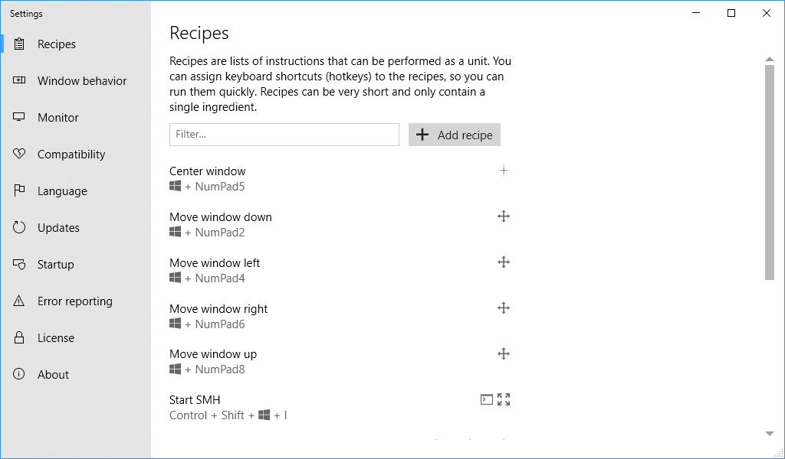
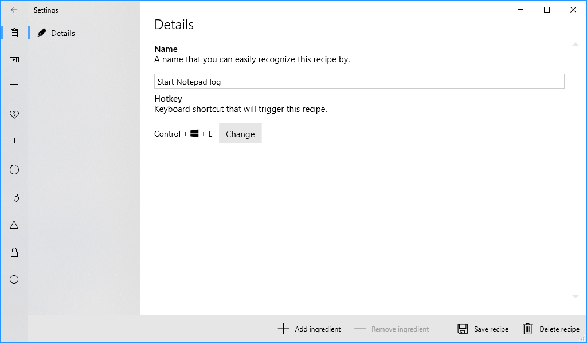
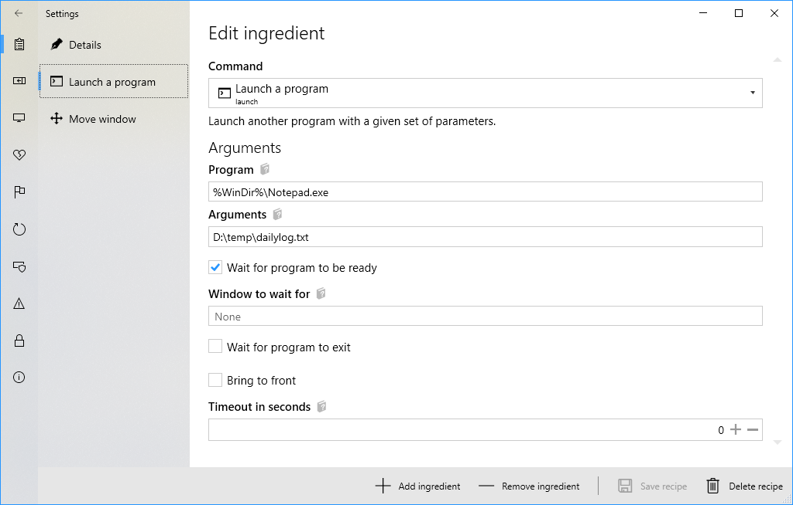
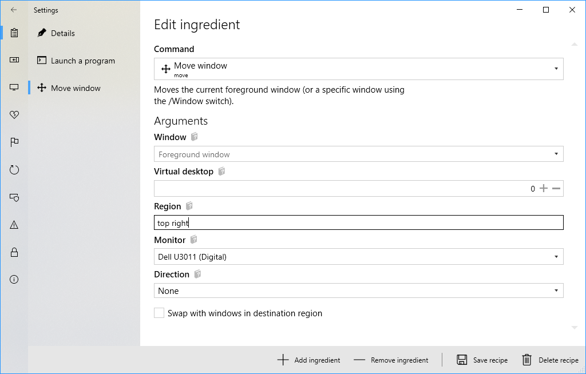

The Recipes feature is arguably the most powerful feature of MaxTo. It lets you run a series of actions by pressing a single hotkey.
You'll find the Recipes in the Settings window. To open it, you'll need to find the MaxTo icon in the notification area. Right-click the icon and choose Settings.

MaxTo ships with a selection of recipes pre-programmed; but you can change all of these if you'd like.
Each recipe has a name and an assigned keyboard shortcut (sometimes known as a hotkey). The default recipes that ship with MaxTo are:
Centers the current active window on the monitor it is active on, without changing its size.
Moves the window to the closest region in the direction you indicated.
Swaps the window with the windows in the closest region in the direction you indicated.
I like to keep a copy of my favorite text editor, Notepad1 in a specific region on my monitor. So I've created a recipe that loads Notepad, with a specific file open, in the same space. So now I can hit my hotkey every morning, and MaxTo places Notepad exactly where I want it.
Each recipe has a few properties, such as its name and an assigned keyboard shortcut. It also contains a list of ingredients, which are commands that are run in order when the recipe is followed. Each ingredient executes a command, which are the essential building blocks of recipes.
MaxTo supports a wide variety of commands, but we only need two of them here. Here are some of the commands MaxTo supports:
To obtain our scenario here, we need two of these commands; we need to launch Notepad and move the window to a specific region.
Let's start by clicking the Add recipe button, which will take us to the recipe settings. I've filled out the details below as I'd like them by giving it a name and assigning a keyboard shortcut.

Next, I'll click Add ingredient to add our first ingredient.

I've set a few parameters here. The first is the program to launch; we need the full path to Notepad.exe, which is always %WinDir%\Notepad.exe.
The second parameter is the arguments to Notepad; which I set as a file I keep notes in. I've checked the box for Wait for program to be ready,
which causes MaxTo to wait until Notepad has shown its user interface before continuing.

For this ingredient, we know that Notepad is now the foreground window, so we don't have to tell the command which window to move. We want to put Notepad in the top, right corner of the monitor we selected.
Now, after you click Save recipe, you can press your keyboard shortcut and Notepad will open in the designated area.
1 Not really. Sorry Notepad.